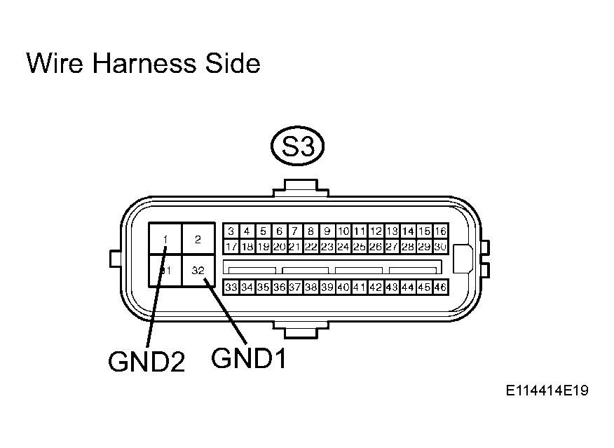
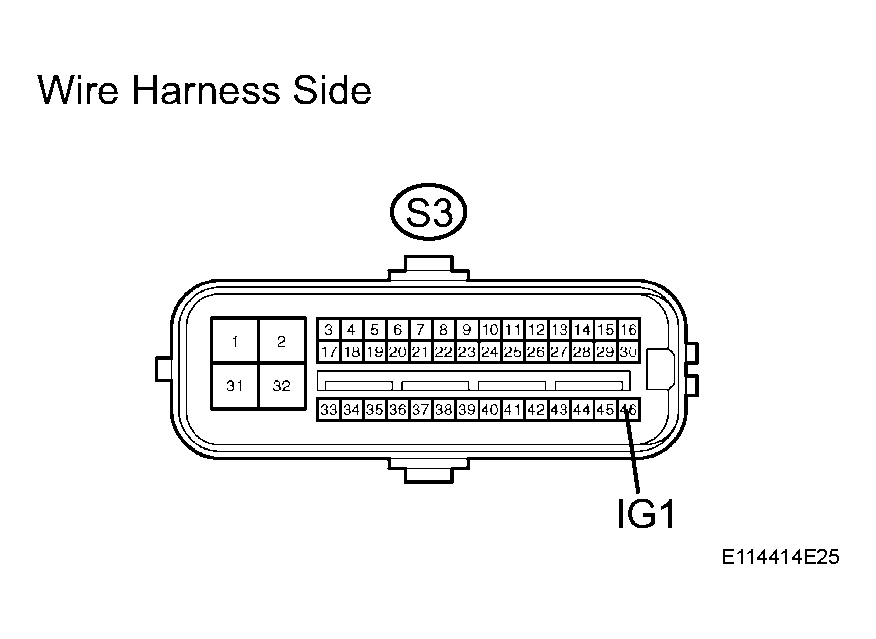

Inspection Procedure
- CHECK FOR DTC
- Check for DTCs (see DTC CHECK / CLEAR
).
Result
RESULT REFERENCEResult Proceed to DTC is not output A DTC is output B
B: REPAIR CIRCUIT INDICATED BY OUTPUT CODE
A: Go to next step
- Check for DTCs (see DTC CHECK / CLEAR
).
- INSPECT SKID CONTROL ECU CONNECTOR SECURELY CONNECTED
NO: CONNECT CONNECTOR TO ECU
YES: Go to Next Step
- CHECK WIRE HARNESS (SKID CONTROL ECU - BODY GROUND)
- Disconnect the S3 ECU connector.
- Measure the resistance of the wire harness side connector.
Standard resistance
TESTER CONNECTION SPECIFIED CONDITIONTester Connection Specified Condition S3-32 (GND1) - Body ground Below 1 Ω S3-1 (GND2) - Body ground
NG: REPAIR OR REPLACE HARNESS AND CONNECTOR

Courtesy of © TOYOTA, LICENSE AGREEMENT TMS1002OK: Go to Next Step
- CHECK WIRE HARNESS (COMBINATION METER - SKID CONTROL ECU AND BODY GROUND)
- Disconnect the C6 meter connector.
- Disconnect the S3 ECU connector.
- Measure the resistance of the wire harness side connectors.
Standard resistance
TESTER CONNECTION SPECIFIED CONDITIONTester Connection Specified Condition C6-10 - S3-36 (VSCW) Below 1 Ω C6-10 - Body ground 10 kΩ or higher Result
RESULT REFERENCEResult Proceed to OK (when using intelligent tester) A OK (when not using intelligent tester) B NG C
B: Go to step 7
C: REPAIR OR REPLACE HARNESS AND CONNECTOR
A: Go to next step
- READ VALUE OF INTELLIGENT TESTER (IG1 VOLTAGE)
- Check the DATA LIST for proper functioning of the IG power voltage.
Skid control ECU with actuator
MEASUREMENT ITEM DIAGNOSTIC CHARTItem Measurement Item / Range (Display) Normal Condition Diagnostic Note IG VOLTAGE ECU power supply voltage / NORMAL / TOO LOW NORMAL: 10 to 14 V
TOO LOW: Below 10 V- OK: NORMAL is displayed.
NG: REPAIR OR REPLACE HARNESS AND CONNECTOR
OK: Go to Next Step
- Check the DATA LIST for proper functioning of the IG power voltage.
- PERFORM ACTIVE TEST BY INTELLIGENT TESTER (VSC WARNING LIGHT)
- Select the ACTIVE TEST, generate a control command, and then check that the VSC warning light illuminates.
Skid control ECU with actuator
MEASUREMENT ITEM DIAGNOSTIC CHARTItem Measurement Item / Range (Display) Diagnostic Note VSC WARN LIGHT Turns VSC warning light ON / OFF Observe combination meter OK: VSC warning light illuminates.
HINT:
When replacing the skid control ECU with actuator, perform the zero point calibration (see CALIBRATION ).
NG: REPLACE COMBINATION METER ASSEMBLY
OK: REPLACE BRAKE ACTUATOR ASSEMBLY
- Select the ACTIVE TEST, generate a control command, and then check that the VSC warning light illuminates.
- CHECK WIRE HARNESS (SKID CONTROL ECU - BATTERY)
- Disconnect the S3 ECU connector.
- Measure the voltage of the wire harness side connector.
Standard voltage
TESTER CONNECTION SPECIFIED CONDITIONTester Connection Switch Condition Specified Condition S3-46 (IG1) - Body ground Ignition switch ON 10 to 14 V
NG: REPAIR OR REPLACE HARNESS AND CONNECTOR

Courtesy of © TOYOTA, LICENSE AGREEMENT TMS1002OK: Go to Next Step
- CHECK VSC WARNING LIGHT
- Disconnect the S3 ECU connector.
- Turn the ignition switch ON.
- Check that the VSC warning light turns off.
OK: VSC warning light turns off.
HINT:
When replacing the skid control ECU with actuator, perform the zero point calibration (see CALIBRATION ).
NG: REPLACE COMBINATION METER ASSEMBLY
OK: REPLACE BRAKE ACTUATOR ASSEMBLY